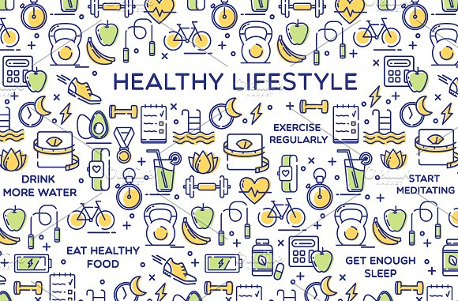

Pregnancy

Baby- in the future?
- Most people want to become parents at some stage, and many people have no problem getting pregnant. But…….it is not always as easy as stopping your contraception.
- Choosing a healthy lifestyle will help your chances and is the best way to invest in the baby’s future heath. A healthy egg and a healthy sperm are the essential ingredients for pregnancy.
- Think about seeing doctor for a checkup at least three months before trying to conceive. If you are living with a health condition like diabetes, ask how to best manage your condition during pregnancy. Your doctor can offer you tips to help you boost your fertility, improve your health during pregnancy, and reduce possible complications.
- Fertility declines as women approach their 30s? At age 37, this decline becomes more rapid, and fertility problems can increase dramatically. Like many women today, you may have been postponing children until your 30s as you focused on your career, education, and other goals. Fertility peaks for women in their twenties. If you are not ready to get pregnant yet, find out how to preserve your fertility while you are young to prevent fertility problems in the future.

Baby- now?
- A woman can only get pregnant on a few days during her menstrual cycle- the “fertile window”- defined as the three days leading up to and including ovulation.(link to ovulation page)
- Sperm live for around 5 days, after release from the ovary, eggs can be fertilized for about one day.
- Eggs and sperm need to come together at the right time to create and embryo.

Baby- been trying?
You are not alone. If you've been trying for a baby for a year or more, it might be time to see your doctor- if you are over 35 and been trying to conceive for over 6 months, time to seek medical advice. You doctor may suggest a fertility specialist and assisted reproductive treatment. (link to ART site) Women under 35 should seek help after one year of trying to get pregnant without success.